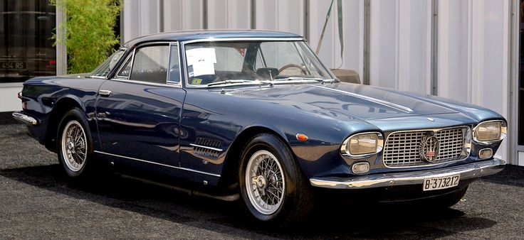
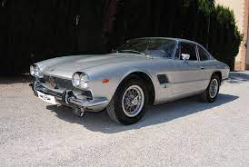
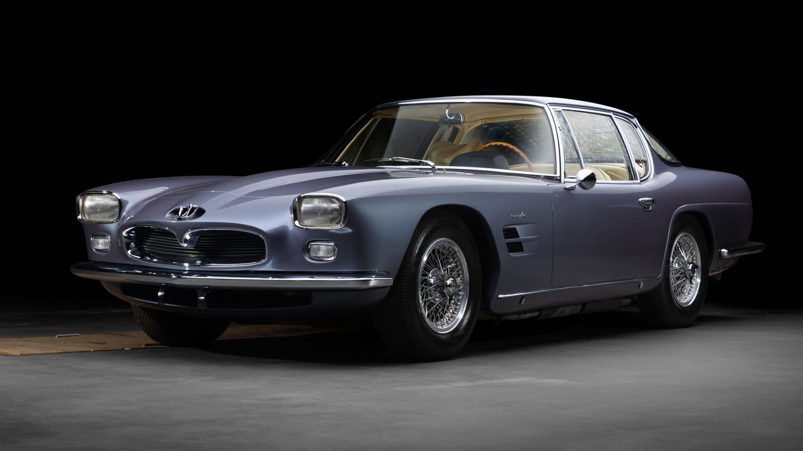
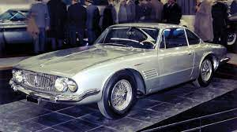
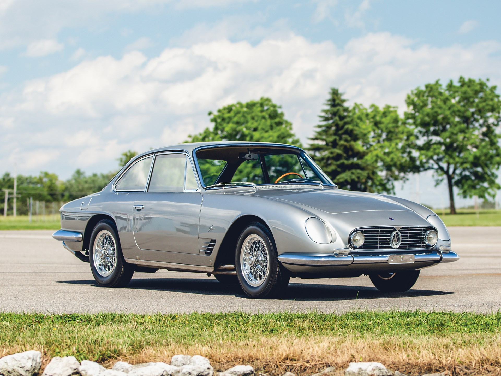
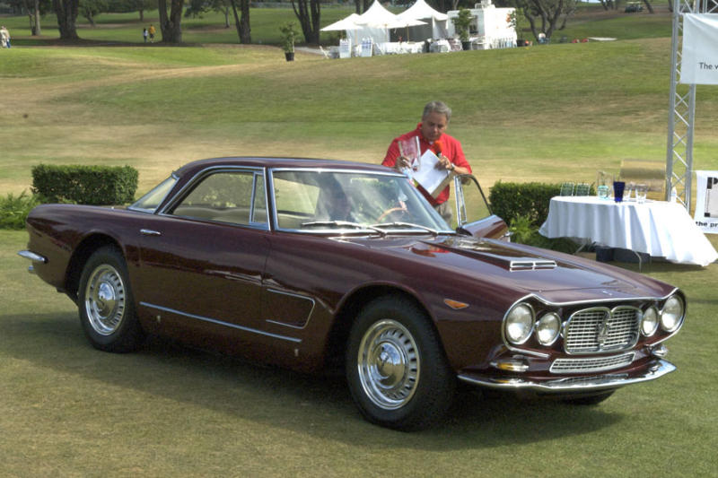
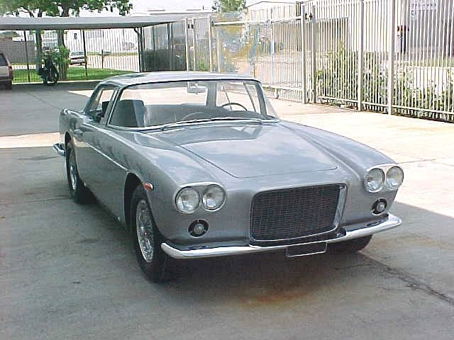

Welcome to the website of Maserati5kGT.
A website for celebrating the extremely underated Maserati 5000GT, coachbuilt by Carrozeria Allemano, Carrozeria Monterosa, Carrozeria Michelotti, Carozzeria Pininfarina, Carrozeria Ghia, Pietro Frua, and Gruppo Bertone.
We are not responsible to the severe consequences of extreme boredom caused by non car guys opening this website due to this website's extreme nerdiness.

Maserati 5000GT by Carrozeria Allemano

Maserati 5000GT by Gruppo Bertone

Maserati 5000GT by Pietro Frua

Maserati 5000GT by Carrozeria Ghia

Maserati 5000GT by Carrozzeria Michelotti

Maserati 5000GT by Carrozzeria Monterosa

Maserati 5000GT by Carrozzeria Pininfarina